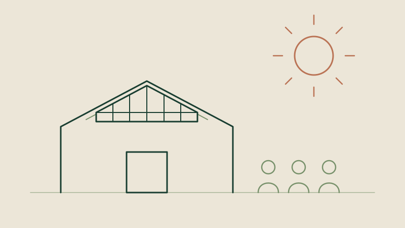

Zon op Haarlemmermeer
A citizen energy cooperative had sold 20% of the shares in a roughly 400-panel solar roof, and needed 70% before it could be built. We worked out why, and how to close the gap.
- My role
- Team member, with an equal share of the analysis and strategy work

Illustration. A real screenshot or photo can replace it.
The problem
Zon op Haarlemmermeer, a young energy cooperative run by and for citizens, planned a solar roof of roughly 400 panels on a municipal building, supported by the national SCE subsidy. Only 20% of the shares had been sold, and 70% were needed before construction could go ahead.
Approach
For the course Marketing Sustainable Innovations at Vrije Universiteit Amsterdam, our team analysed the barriers to share sales, mapped the stakeholders and built a value-exchange model. From that we proposed a marketing campaign, a strategy for creating buy-in, and a co-creation plan.
My contribution
I shared the research, analysis and recommendations equally with my teammates.
Outcome
Placeholder. No outcome recorded yet. Add a real result here when there is one, such as a launch, a grade, users or feedback.